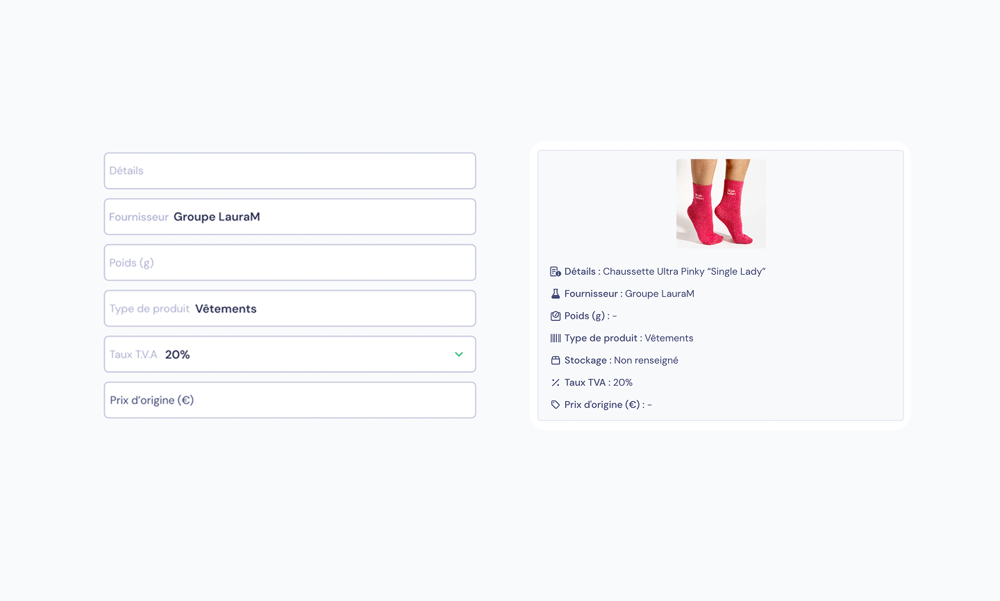
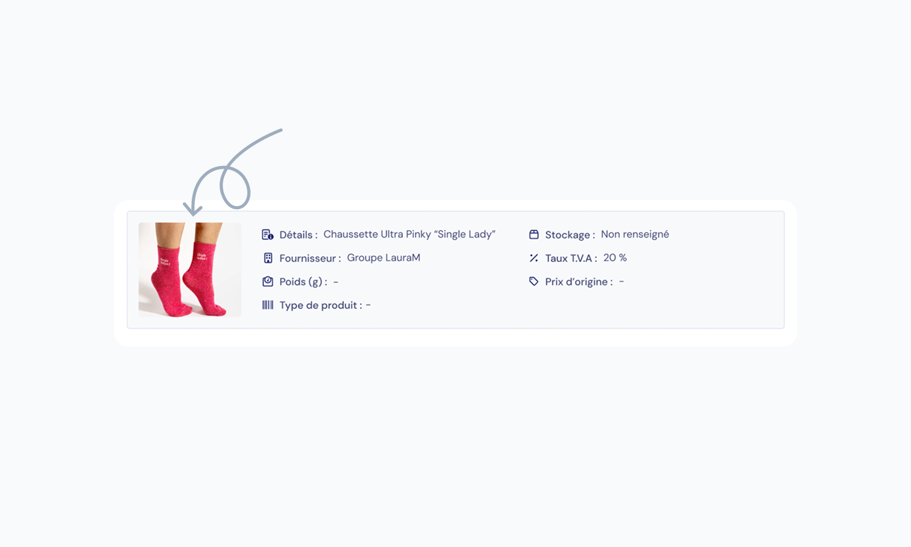
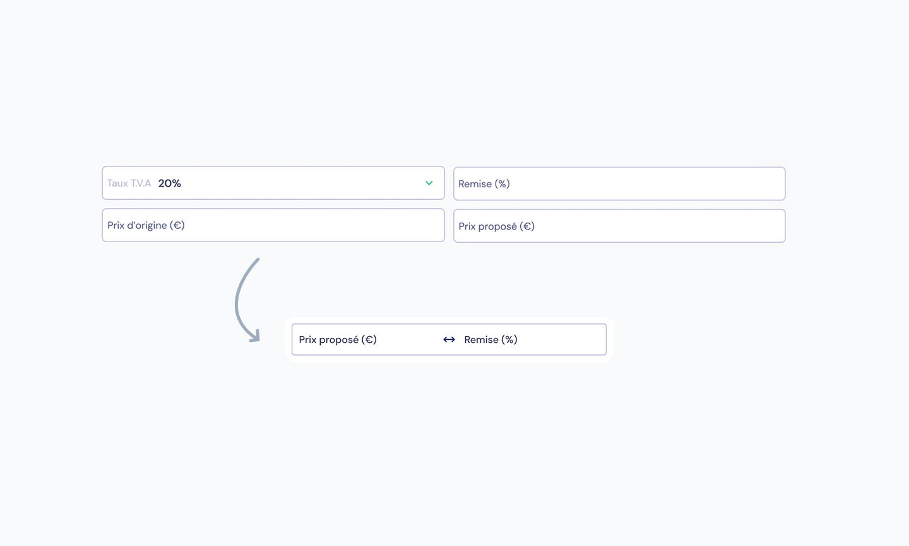
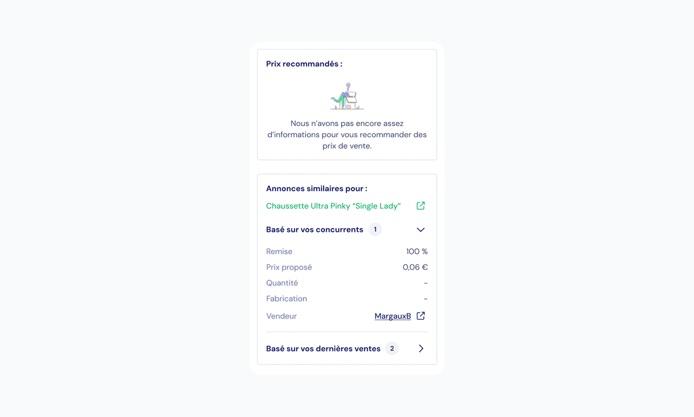
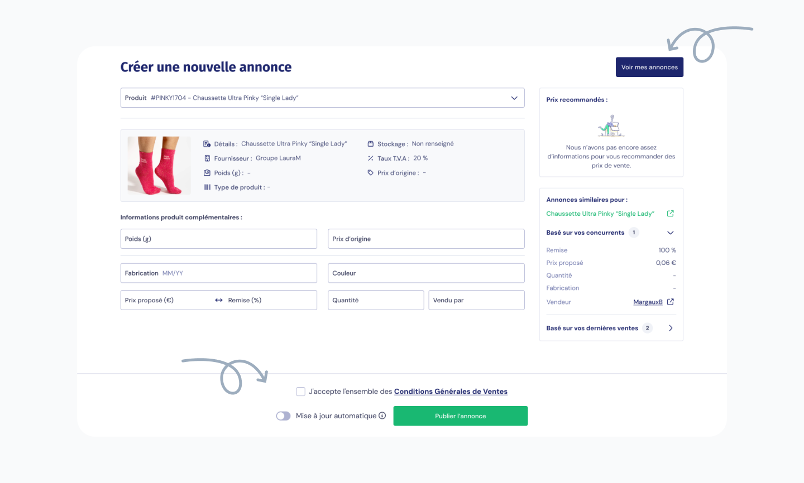

Réduction de 50 % du temps
de mise en vente produit
Refonte stratégique du parcours vendeur sur une marketplace BtoB pour réduire le churn et accélérer la publication d'annonces.
Vue d'ensemble du projet
Project overview
- Mon rôle
- Product Designer - UX · UI · Discovery · Product strategy
- Collaboration
- 1 jour / semaine dont 1h de réunion hebdomadaire
- Méthodes utilisées
-
User interviews User shadowing Analyse comportementale (Heap) Priorisation parcours Refonte UX/UI
Impact
de temps moyen pour créer une annonce
Pourquoi ça a marché
Le formulaire avant et après refonte


Le problème n'était pas visuel.
Le vrai sujet était l'effort demandé à l'utilisateur pour vendre sur la plateforme. Chaque champ inutile, chaque doute, chaque aller-retour augmentait le risque d'abandon.
L'objectif : rendre la mise en vente simple, rapide et rassurante.
Cinq leviers,
un seul objectif : moins d'effort

Moins de confusion · Moins d'erreursRéduction de moitié des champs à compléter
Plusieurs champs affichés comme éditables étaient en réalité alimentés par la base de données interne. Ils ont été déplacés dans un encart dédié non modifiable, avec une affordance claire.

Moins de charge cognitiveRéassurance immédiate grâce au visuel produit
Ajout de la photo produit directement dans le parcours. Le vendeur confirme instantanément qu'il a sélectionné le bon produit, sans devoir vérifier un code article. Une image évite ici plusieurs étapes de vérification.

Clarté · Gain de tempsFusion des champs prix + remise
Le prix proposé et la remise étaient deux champs séparés alors qu'ils dépendaient l'un de l'autre. Ils ont été fusionnés dans une seule logique d'action. L'utilisateur comprend immédiatement quoi renseigner.

Moins de navigation parasite · Meilleure décisionAnalyse concurrentielle intégrée au parcours
Les vendeurs quittaient systématiquement le formulaire pour comparer les prix ailleurs. Nous avons intégré cette aide directement dans la colonne latérale : prix recommandés, concurrence récente, anciennes ventes personnelles.

Fluidité · ContinuitéAccès rapide aux actions
CTA fixes en bas d'écran, accès direct à la gestion des annonces, liens externes ouverts sans perte de progression. L'objectif : ne jamais casser l'élan de mise en vente.
Quand on réduit l'effort,
on réduit l'abandon
En seulement 3 mois après mise en production :
−50%
22 min 37 → 10 min 07
de temps moyen pour créer une annonce
mesuré via Heap
Augmentation du nombre d'annonces publiées par les vendeurs actifs
Amélioration de la rétention sur les premières semaines d'utilisation
Réduction du churn vendeur sur la plateforme
Votre parcours
freine vos ventes ?
Le problème n'est pas votre produit, c'est la friction qu'il impose à vos utilisateurs. Je vous aide à identifier ce qui bloque vraiment et à transformer votre produit en levier de croissance.